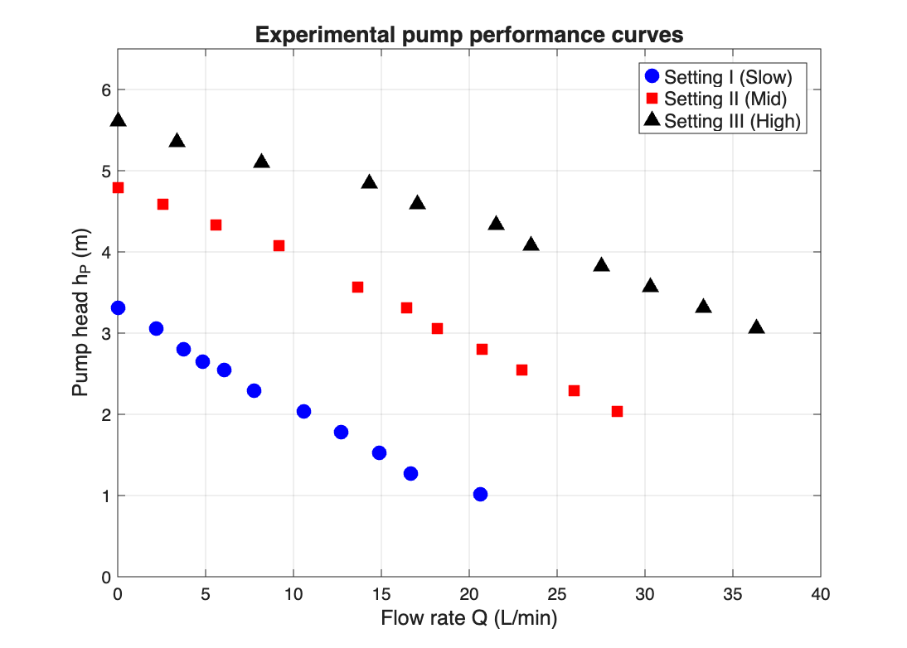
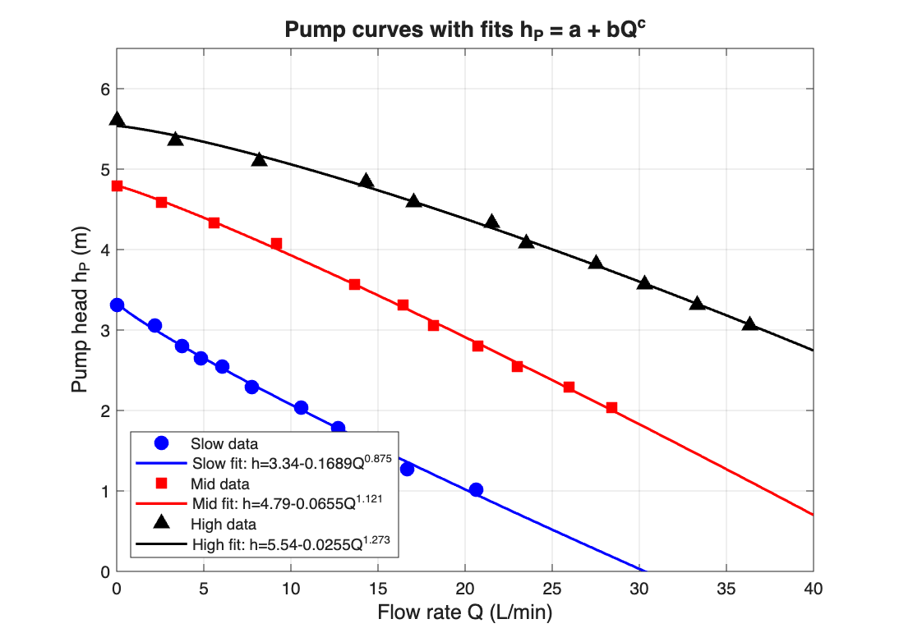
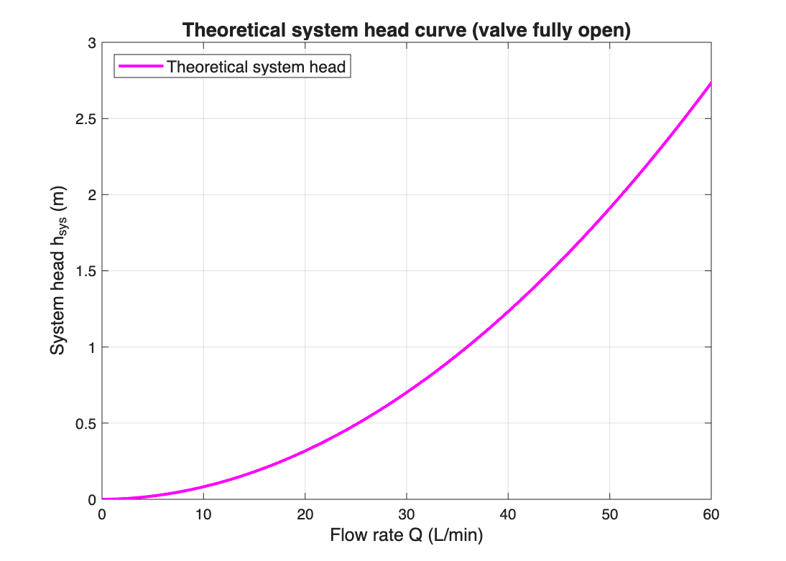
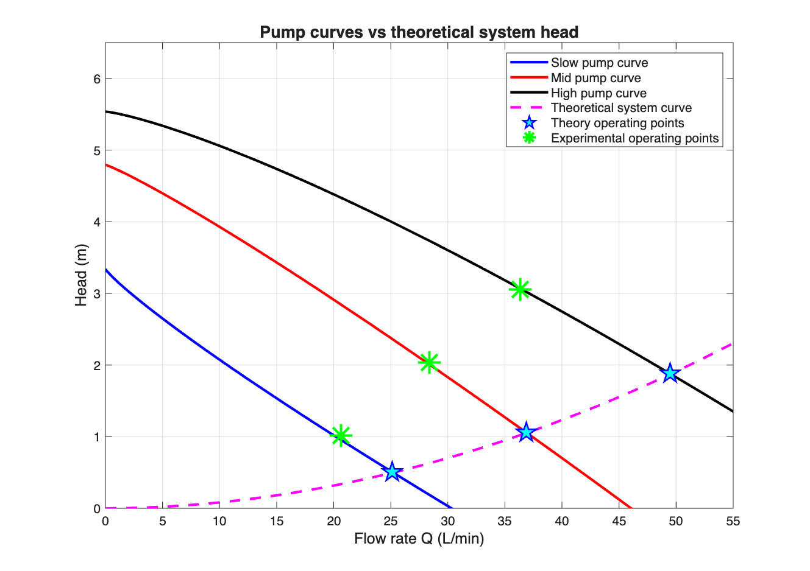

This practical investigated the operation and performance of a 100 W centrifugal pump. The pump was first dismantled to identify its principal components (impeller, volute, motor, seals). Performance was then characterised across three speed settings by measuring the pump head $h_P$ as a function of volumetric flow rate $Q$. Experimental data were fitted to the form $h_P = a + bQ^c$ ($R^2 > 0.996$ for all settings), giving shutoff heads of 3.31, 4.79 and 5.61 m for the Slow, Mid and High settings respectively. A theoretical system head curve was constructed for the valve-fully-open configuration using the Fanning friction factor (Haaland equation) and tabulated minor-loss coefficients. The theoretical system head underpredicted the measured head loss by a factor of approximately 3 at all three operating points, with the orifice flow meter contributing the largest single source of theoretical loss (~50% of $h_{sys}$). The discrepancy is attributed primarily to an underestimated flow-meter resistance coefficient and unaccounted-for losses in pipe fittings and unions.
The piping system, viewed from inlet to outlet, contains the following elements (locations of minor losses marked with ★):
| Element | Length / size | Minor-loss source? |
|---|---|---|
| Reservoir entrance (sharp-edged) | DN25, ID 25 mm | ★ $K = 0.5$ |
| DN25 PVC pipe (section 1) | $L = 108$ cm, $D = 25$ mm | — |
| Centrifugal pump | — | (provides $h_P$) |
| Gate valve (fully open) | — | ★ $K = 0.2$ |
| 2 × 90° elbow | — | ★ $K = 0.9$ each |
| Contraction DN25 → DN20 | sudden | ★ $K = 0.20$ |
| DN20 PVC pipe | $L = 39$ cm, $D = 20$ mm | — |
| Orifice flow meter | ID 14 mm | ★ $K = 2.7$ (given) |
| Expansion DN20 → DN25 | sudden | ★ $K = 0.130$ |
| DN25 PVC pipe (section 2) | $L = 22$ cm, $D = 25$ mm | — |
| Pipe exit → reservoir | — | ★ $K = 1.0$ |
Note: A hand-drawn or PowerPoint schematic should be inserted here showing the flow path with these elements labelled. Major losses (pipe friction) occur in the three pipe sections (1.30 m total of DN25 and 0.39 m of DN20).
Priming is the process of filling the pump casing and suction line with the working liquid prior to startup, displacing any trapped air. It is essential for centrifugal pumps because they are not self-priming: the impeller develops head by transferring kinetic energy to the liquid via centrifugal action, and air is too low in density for the impeller to generate sufficient suction pressure to draw water up from the reservoir.
Consequences of running an unprimed pump include:
In this practical, the water-sealing bolt is loosened to vent trapped air while the system fills, and re-tightened once a continuous stream of water flows through.
The pump head was computed from the gauge readings using $h_P = (P_4 - P_3)/(\rho g)$ with $\rho = 1000$ kg/m³ and $g = 9.81$ m/s². Since $P_3 \approx 0$ gauge on the suction side, $h_P\,[\text{m}] = P_\text{gauge}\,[\text{kPa}] / 9.81$.

| Setting | $P$ range (kPa) | $Q$ range (L/min) | Shutoff head (m) |
|---|---|---|---|
| Slow (I) | 32.5 → 10 | 0 → 20.65 | 3.31 |
| Mid (II) | 47 → 20 | 0 → 28.40 | 4.79 |
| High (III) | 55 → 30 | 0 → 36.36 | 5.61 |
Nonlinear least-squares fitting (MATLAB lsqcurvefit) gives:
| Setting | $a$ (m) | $b$ | $c$ | $R^2$ |
|---|---|---|---|---|
| Slow | 3.3395 | −0.16888 | 0.8747 | 0.9967 |
| Mid | 4.7939 | −0.06548 | 1.1210 | 0.9986 |
| High | 5.5369 | −0.02546 | 1.2733 | 0.9966 |

Physical interpretation: The parameter $a$ equals the shutoff head (maximum pressure rise at $Q = 0$); $bQ^c$ is the head-degradation term as flow increases. The exponent $c$ controls the curve shape — $c < 1$ gives a curve that drops steeply at low $Q$ then flattens (Slow), $c > 1$ gives a curve that descends more gradually at first then steepens (Mid, High).
Purpose: A throttling valve controls the volumetric flow rate $Q$ through a piping system. The valve introduces a variable resistance coefficient $K$, raising the friction head and shifting the system head curve $h_\text{sys}(Q)$ upward. Its intersection with the (fixed) pump curve therefore moves to a lower $Q$, allowing $Q$ to be set to any desired value below the wide-open value.
NPSH implication of placing a throttling valve before the pump inlet:
The Net Positive Suction Head available is
$$ NPSH_A = \frac{P_1 - P_\text{vap}}{\rho g} + z_1 - h_{fs} $$
where $h_{fs}$ is the friction head loss on the suction side. A throttling valve upstream of the pump adds a large $K$ to the suction-side losses, directly increasing $h_{fs}$ and therefore decreasing $NPSH_A$. If $NPSH_A < NPSH_R$, the local pressure on the suction side falls below the liquid vapour pressure, vapour bubbles form, and cavitation occurs.
Consequences of cavitation:
For these reasons, throttling valves should always be placed on the discharge (high-pressure) side of the pump. The suction side is kept as low-resistance as practicable.
Applying the mechanical energy balance between the reservoir surface (point 1) and the tank discharge (point 2), and noting that both surfaces are at atmospheric pressure with negligible velocity and identical elevation:
$$ h_P = h_L = \sum_i 2 f_F \!\left(\frac{L}{D}\right)_i \frac{V_i^2}{g} + \sum_j K_j \frac{V_j^2}{2g} $$
Assumptions: Water at 20 °C ($\rho = 1000$ kg/m³, $\mu = 1.0\times10^{-3}$ Pa·s); PVC pipe taken as hydraulically smooth ($\varepsilon \approx 1.5\times10^{-6}$ m); $\alpha = 1$ (turbulent flow, verified below); sharp-edged pipe entrance/exit.
Fanning friction factor calculated from the Haaland correlation:
$$ \frac{1}{\sqrt{f_D}} = -1.8 \log_{10}\!\left[\frac{6.9}{Re} + \left(\frac{\varepsilon/D}{3.7}\right)^{1.11}\right], \quad f_F = f_D/4 $$
Resistance coefficients used (from Çengel & Cimbala Table 8-4 and Topic 4 lecture notes):
| Element | $K$ | Reference velocity |
|---|---|---|
| Pipe entrance (sharp-edged) | 0.5 | $V_{25}$ |
| Gate valve (fully open) | 0.2 | $V_{25}$ |
| 90° threaded elbow (×2) | 0.9 each | $V_{25}$ |
| Sudden contraction 25→20 ($d^2/D^2 = 0.64$) | 0.20 | $V_{20}$ |
| Orifice flow meter (given) | 2.7 | $V_{20}$ |
| Sudden expansion 20→25 ($K = (1-A_{20}/A_{25})^2$) | 0.130 | $V_{20}$ |
| Pipe exit (pipe → tank) | 1.0 | $V_{25}$ |
Flow regime check at maximum experimental flow ($Q = 36.36$ L/min):
| Section | $V$ (m/s) | $Re$ | Regime |
|---|---|---|---|
| DN25 | 1.235 | 30,863 | turbulent |
| DN20 | 1.929 | 38,579 | turbulent |
Both $Re \gg 4000$, so the turbulent flow assumption ($\alpha = 1$) is valid.

At the valve-fully-open condition, the pump head equals the total system head loss (since $\Delta z = 0$, $\Delta P = 0$, $\Delta V^2 \approx 0$ at the tank surfaces). The experimental and theoretical comparisons are:
| Setting | $Q_\text{exp}$ (L/min) | $h_{P,\text{exp}} = h_{\text{sys,exp}}$ (m) | $h_{\text{sys,theory}}$ (m) | Ratio exp/theory |
|---|---|---|---|---|
| Slow | 20.65 | 1.019 | 0.338 | 3.02 × |
| Mid | 28.40 | 2.039 | 0.630 | 3.24 × |
| High | 36.36 | 3.058 | 1.022 | 2.99 × |
Theoretical operating points from the intersection of the pump and system curves (Figure 4):
| Setting | $Q_\text{theory}$ (L/min) | $h_\text{theory}$ (m) | $Q_\text{exp}$ (L/min) | $Q$ error |
|---|---|---|---|---|
| Slow | 25.14 | 0.505 | 20.65 | +21.7% |
| Mid | 36.85 | 1.060 | 28.40 | +29.8% |
| High | 49.47 | 1.879 | 36.36 | +36.0% |

| Loss term | Slow (20.65 L/min) | Mid (28.40 L/min) | High (36.36 L/min) |
|---|---|---|---|
| Friction DN25 (1.30 m) | 0.0348 | 0.0608 | 0.0940 |
| Friction DN20 (0.39 m) | 0.0302 | 0.0529 | 0.0819 |
| Entrance ($K=0.5$) | 0.0125 | 0.0237 | 0.0388 |
| Gate valve ($K=0.2$) | 0.0050 | 0.0095 | 0.0155 |
| 2 × 90° elbow | 0.0451 | 0.0853 | 0.1398 |
| Contraction ($K=0.20$) | 0.0122 | 0.0231 | 0.0379 |
| Flow meter ($K=2.7$) | 0.1652 | 0.3124 | 0.5120 |
| Expansion ($K=0.130$) | 0.0079 | 0.0150 | 0.0246 |
| Exit ($K=1.0$) | 0.0251 | 0.0474 | 0.0777 |
| Total $h_\text{sys}$ (m) | 0.338 | 0.630 | 1.022 |
The experimental system head loss is approximately 3.0–3.2× larger than the theoretical prediction across all three settings. Importantly, this ratio is essentially constant, suggesting a systematic underestimation rather than random error. Several factors likely contribute:
Conclusion of comparison: While the shape of the theoretical system curve correctly captures the quadratic $Q^2$ dependence, the magnitude is significantly underestimated, primarily because the standard $K = 2.7$ for the orifice flow meter is conservative for this specific geometry. A more accurate prediction would require either direct measurement of the flow-meter pressure drop or use of a calibrated orifice-meter discharge coefficient.
The three primary aims of the practical were achieved:
For improved theoretical accuracy, the flow meter $K$-value should be calibrated experimentally, and additional fitting losses (unions, couplings) should be included in the model.
Q = 36.36 L/min = 6.06 × 10⁻⁴ m³/s V_25 = Q / (π × 0.025² / 4) = 1.235 m/s V_20 = Q / (π × 0.020² / 4) = 1.929 m/s Re_25 = 1000 × 1.235 × 0.025 / 1e-3 = 30,863 (turbulent) Re_20 = 1000 × 1.929 × 0.020 / 1e-3 = 38,579 (turbulent) Haaland (smooth pipe, ε/D ≈ 0): f_D,25 = 0.0233 → f_F,25 = 0.00582 f_D,20 = 0.0221 → f_F,20 = 0.00554 Major losses: h_f,25 = 2 × 0.00582 × (1.30 / 0.025) × 1.235² / 9.81 = 0.094 m h_f,20 = 2 × 0.00554 × (0.39 / 0.020) × 1.929² / 9.81 = 0.082 m Minor losses (V²/2g terms): V_25²/2g = 0.0777 m; V_20²/2g = 0.1896 m Entry = 0.5 × 0.0777 = 0.0388 m Valve = 0.2 × 0.0777 = 0.0155 m 2 elbows = 1.8 × 0.0777 = 0.1398 m Contract = 0.20 × 0.1896 = 0.0379 m Flow meter = 2.7 × 0.1896 = 0.5120 m Expand = 0.130 × 0.1896 = 0.0246 m Exit = 1.0 × 0.0777 = 0.0777 m Total h_sys (theory) = 1.022 m Experimental h_sys at Q = 36.36 = 30/9.81 = 3.058 m Ratio exp/theory = 2.99×
| Slow $P$ (kPa) | Slow $Q$ (L/min) | Mid $P$ (kPa) | Mid $Q$ (L/min) | High $P$ (kPa) | High $Q$ (L/min) |
|---|---|---|---|---|---|
| 32.5 | 0 | 47 | 0 | 55 | 0 |
| 30 | 2.17 | 45 | 2.56 | 52.5 | 3.36 |
| 27.5 | 3.75 | 42.5 | 5.61 | 50 | 8.18 |
| 26 | 4.85 | 40 | 9.18 | 47.5 | 14.31 |
| 25 | 6.06 | 35 | 13.64 | 45 | 17.04 |
| 22.5 | 7.75 | 32.5 | 16.42 | 42.5 | 21.54 |
| 20 | 10.60 | 30 | 18.18 | 40 | 23.50 |
| 17.5 | 12.71 | 27.5 | 20.73 | 37.5 | 27.54 |
| 15 | 14.90 | 25 | 23.00 | 35 | 30.30 |
| 12.5 | 16.67 | 22.5 | 25.97 | 32.5 | 33.32 |
| 10 | 20.65 | 20 | 28.40 | 30 | 36.36 |
Full analysis script: prac2_full_analysis.m in the project folder. Generates all fits, the theoretical system curve, and all four figures.